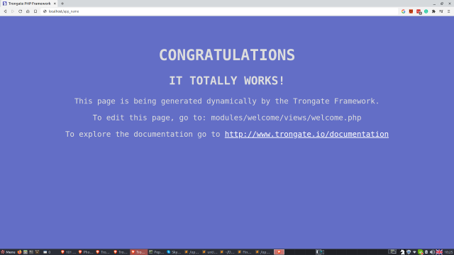

Trongate can be configured to load a default controller whenever your website homepage is loaded. To specify a default controller, open your config/config.php file and set your default module, controller and method as required. For example:
define("DEFAULT_MODULE", "welcome");
define("DEFAULT_CONTROLLER", "Welcome");
define("DEFAULT_METHOD", "index");
In the example above, a module named 'welcome' is loaded by default. The welcome module then loads a controller file named 'Welcome.php'. Finally, a method named 'index' is invoked. So, this sequence of events will happen every time somebody visits the website homepage.

However, whilst there is a good case for only declaring two values (for setting your homepage endpoint), the three values (1. module, 2. controller, 3, method) are required in case a hypothetical scenario emerges where there is a need for the main controller to have a different name from the module. At the time of writing, we're not aware of there being any such scenario. However, if it does happen then at least the framework will be ready! This is one of the many instances where future-proofing has been built into the Trongate framework.
Remember, Trongate represents a genuine attempt to give the PHP community a much needed 'V1 forever' framework!